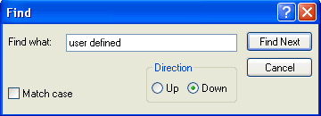
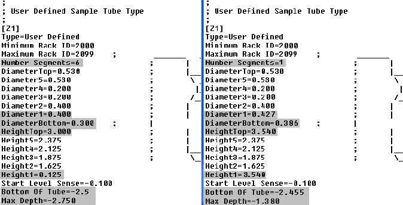

Configuring for 4.9-mL Sarstedt User-Defined Tube Type
Prerequisites:
This change requires V2.4 software or greater.
This procedure describes how to modify the Specific.ini file to use the 4.9-mL Sarstedt-Monovette sample tubes.
Note: For customers who are using Sarstedt 4.9-mL containers.
Table 51: 4.9-mL Sarstedt tube
Sample Container
Container Type Label
Dead Volume
Sarstedt Tube 13 x 90
4.9 mL
3.5 mL
Create a copy of the specific.ini file.
Connect to the AU.
If the system is running Windows NT, then connect using PCAnywhere.
If the system is running Windows XP, then connect using Remote Desktop Sharing.
Select
My computer > C: > AU, and open the specific.ini file.
Right-click the specific.ini file, and select
Copy.
From the Windows Explorer window, right-click in the Temp folder and select
Paste.
Note: A copy of the specific.ini file is placed in the Temp folder.
Close the Explorer window.
Modify the specific.ini file to accept the 4.9-mL Sarstedt-Monnovette sample tubes.
From the user interface, use PcAnywhere to connect to the AU desktop.
Shut down the AUObj.exe program.
Select
My computer > C: > AU and open the specific.ini file.
Note: A copy of the specific.ini file can be created and placed in the temp directory on the C drive. This copy of the original file can help if an error is made during the .ini file change.
Select
Edit > Find.
In the Find window, type
user defined, and then select
Find Next
> Find Next
to find the beginning of the user-defined tube type information within the specific.ini file.

Make the necessary changes to the user-defined tube types in the specific.ini file. Make only these changes.
Entries requiring edits (change to):
Number of Segments = 1
Diameter 1 = 0.427
Diameter Bottom = 0.386
Height Top = 3.540
Height 1-3.540
Bottom Of Tube = -2.455
Max Depth = -1.380
Note: If additional edits or incorrect edits are made, the system may not recognize the tube dimensions, causing system sampling errors.
Figure 111: Before (left) and after (right) edits with changes shown in gray

Select
File > Save to save the edits.
Close the specific.ini file and restart the AUObj.exe program. End the PcAnywhere session to return to the user interface.
Note: The system begins to initialize.
Navigate to the Rack ID screen and assign the range of bar codes for the new tube type, using the user-defined tube type on the pull-down.
Note: The default rack ID range for the user-defined tubes is 2000 to 2099.
Load racks with the new 4.9-mL tubes. Load the racks on the system and verify that the system recognizes the new tube type without any errors. If the system generates an undefined tube type error, then check the saved specific.ini file edits for any typographical errors and retry loading the racks. If errors continue, then contact Technical Support.
Calculate the minimum sample volumes for proper instrument operation.
The sample assay volume is the sum of the sample volumes for each requested test. To calculate the sample volume for each test, add: the assay sample volume (A) + the system dead volume (B) + the reserve volume (C)+ the pipettor overdraw (D)+ the sample container dead volume (E).
For B: The system dead volume is the amount of sample that cannot be drawn from an RV inside the instrument. The system dead volume is 60 µL for each RV.
For C: (If set up) The reserve volume is the amount of sample the system stores for additional testing. For more information, refer to the Reflex Test Setup topic.
For D: The sample pipettor overdraw is 20 µL or 5% or the volume of sample in the RV (A+B+C= pipettor overdraw).
For E: The sample container dead volume is the amount of sample that cannot be pipetted from the sample container. To find the dead volume for a specific container, see the Sample Containers topic.
Note: If the sum of the sample and reserve volumes (A+C) is greater than 500 µ/L, the system aliquots the reserve volume into one or two additional RVs. For each additional RV, include the system dead volume and the calculated amount of sample pipettor overdraw.
Verify the calculated volumes by running controls from the 4.9-mL Sarstedt containers being used. Include the specified container dead volumes (and overdraw (20 µL) + sample vessel dead volume (60 µL)).
Note: These calculations can be found in the help screens if necessary.